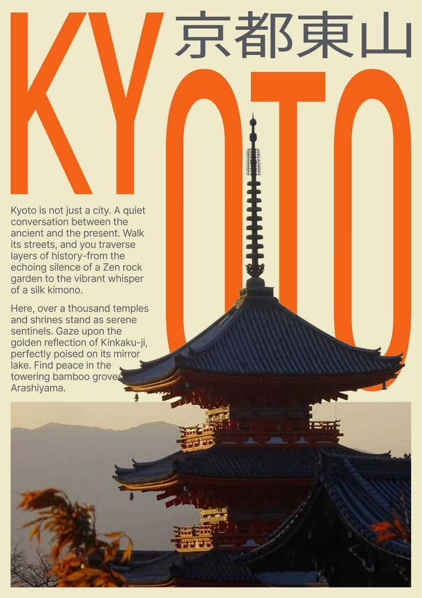
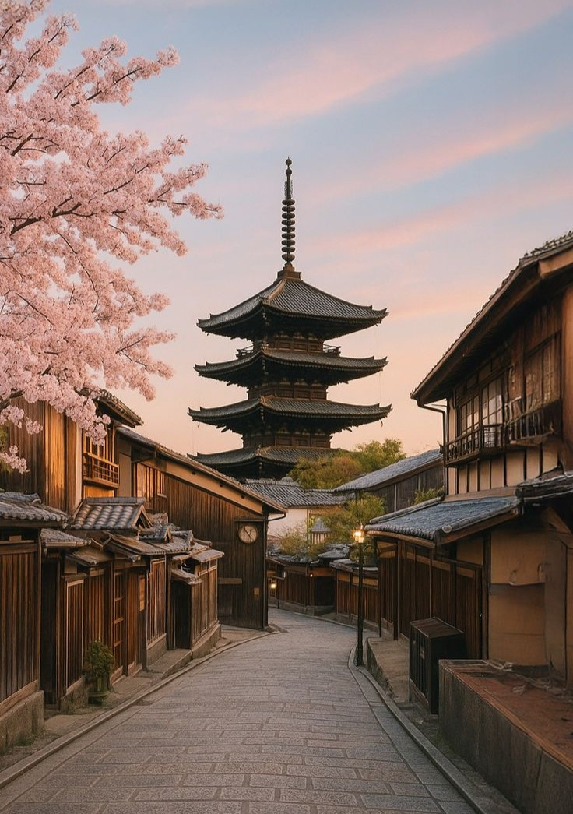

Japão para Visitantes
Um guia introdutório para te guiar em uma jornada de descobertas pelo Japão.
Um guia introdutório para te guiar em uma jornada de descobertas pelo Japão.

Quioto, localizada na região de Kansai, foi a capital imperial do Japão por mais de mil anos, o que a torna um dos centros culturais e históricos mais importantes do país. Diferente de cidades altamente urbanizadas como Tóquio, Quioto preserva com maior intensidade suas tradições, arquitetura clássica e estilo de vida mais contemplativo, oferecendo uma experiência distinta e mais voltada à herança cultural japonesa. A cidade possui um ritmo mais calmo e organizado, com menor densidade urbana em comparação às grandes metrópoles. Suas ruas frequentemente combinam construções modernas com casas tradicionais de madeira, conhecidas como “machiya”, refletindo a continuidade entre passado e presente. Esse equilíbrio contribui para uma atmosfera mais tranquila, ideal para quem busca compreender aspectos mais profundos da cultura japonesa. O sistema de transporte em Quioto é eficiente, porém menos abrangente que o de grandes capitais. Ônibus desempenham um papel central na locomoção, conectando diversas áreas da cidade, enquanto linhas de trem e metrô complementam o deslocamento. Para visitantes, isso exige um pouco mais de planejamento, mas ainda assim permite acesso prático à maioria das regiões. Culturalmente, Quioto é um dos principais polos de preservação das tradições japonesas. É comum encontrar práticas como cerimônia do chá, uso de vestimentas tradicionais e manifestações artísticas que remontam a séculos de história. A cidade também é conhecida pela presença das gueixas (geiko) e aprendizes (maiko), especialmente em distritos específicos, mantendo viva uma das expressões culturais mais emblemáticas do Japão. A etiqueta social em Quioto tende a ser ainda mais valorizada, com forte ênfase em respeito, discrição e formalidade. Visitantes são incentivados a adotar comportamentos adequados, como falar em tom moderado, respeitar espaços privados e seguir regras locais, especialmente em áreas residenciais e tradicionais. O custo de vida e de turismo pode variar, sendo geralmente moderado a elevado dependendo da época do ano. Durante períodos de alta demanda, como a primavera e o outono, a cidade recebe um grande fluxo de visitantes, o que impacta preços e disponibilidade de hospedagem. Fora dessas épocas, é possível encontrar opções mais acessíveis. O clima em Quioto apresenta estações bem definidas, com verões quentes e úmidos e invernos frios, ocasionalmente com neve. A primavera e o outono são considerados os períodos mais agradáveis, tanto pelas condições climáticas quanto pelas mudanças na paisagem natural. A culinária local possui características próprias, conhecida como “kyo-ryori”, que valoriza ingredientes sazonais e apresentações delicadas. Pratos costumam ser mais sutis em sabor e aparência, refletindo a estética tradicional japonesa e a atenção aos detalhes. Outro aspecto relevante é o forte senso de identidade cultural presente na cidade. Quioto mantém uma relação mais próxima com suas raízes históricas, priorizando a preservação em vez da constante transformação. Isso se reflete tanto na arquitetura quanto no comportamento da população e nas políticas de conservação urbana. De forma geral, Quioto representa o lado mais tradicional e histórico do Japão. Para quem deseja compreender a essência cultural do país, seus costumes e sua evolução ao longo do tempo, a cidade oferece um contexto rico e aprofundado, complementando a experiência proporcionada por centros urbanos mais modernos.

Quioto concentra alguns dos pontos turísticos mais representativos do Japão, com forte ênfase em patrimônio histórico, arquitetura tradicional e experiências culturais. Entre os locais mais emblemáticos está o Fushimi Inari Taisha, conhecido por seus milhares de portais torii vermelhos que formam trilhas ao longo da montanha. Outro destaque é o Kinkaku-ji, um templo coberto por folhas de ouro que reflete sobre um lago, sendo um dos cenários mais reconhecidos do país. Já o Ginkaku-ji apresenta uma proposta mais simples e contemplativa, valorizando jardins e estética minimalista. No campo dos templos históricos, o Kiyomizu-dera se destaca por sua estrutura elevada de madeira e vista panorâmica da cidade. Outro local relevante é o Templo Ryoan-ji, famoso por seu jardim de pedras, associado à prática do zen-budismo. O Castelo Nijo representa o período feudal japonês e foi residência de xoguns, preservando arquitetura e interiores históricos. Já o Palácio Imperial de Kyoto reflete a antiga função da cidade como capital imperial. A região de Gion é conhecida por manter tradições ligadas às gueixas (geiko) e maiko, além de ruas preservadas com construções antigas. Outro ambiente tradicional é Higashiyama, com ruas estreitas, lojas artesanais e forte identidade cultural. Para contato com a natureza, o Arashiyama é um dos destinos mais visitados, especialmente por sua famosa floresta de bambu. Próximo dali, encontra-se a Ponte Togetsukyo, que oferece uma vista característica da região. Outro destaque é o Templo Tenryu-ji, classificado como Patrimônio Mundial, com jardins que seguem o estilo tradicional japonês. Para experiências mais contemplativas, o Caminho do Filósofo proporciona uma caminhada tranquila ao longo de um canal cercado por natureza. Quioto também abriga mercados tradicionais, como o Mercado Nishiki, onde é possível conhecer ingredientes e pratos típicos da culinária local. A variedade de pontos turísticos em Quioto reflete sua importância histórica e cultural. Cada local oferece uma perspectiva diferente sobre o Japão tradicional, permitindo ao visitante uma imersão mais profunda nos costumes, arquitetura e valores que moldaram o país ao longo dos séculos.